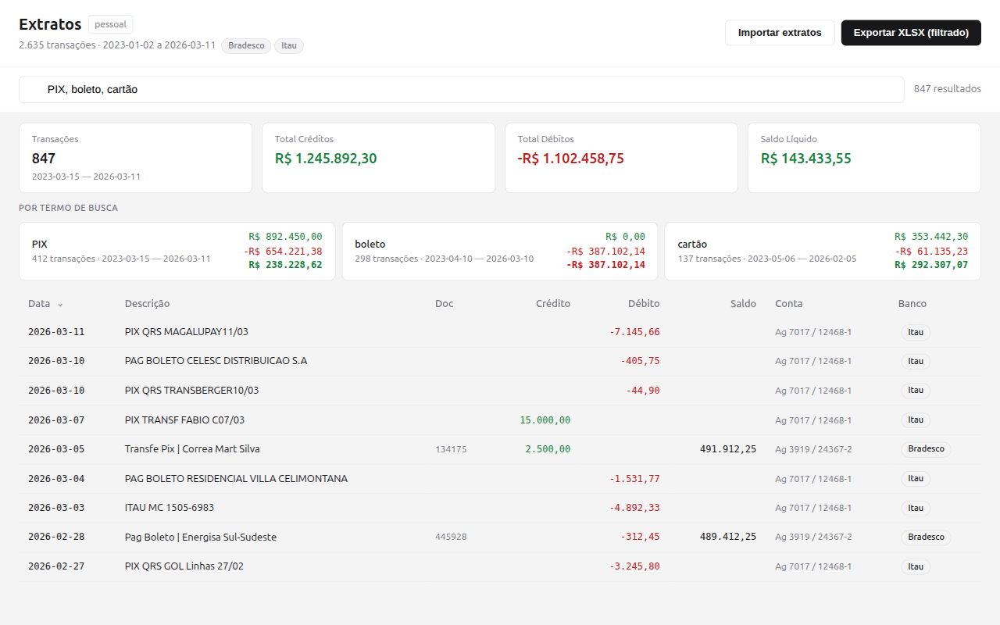

FTS5 com tokenização trigram para busca por substring, insensível a acentos. Separe termos com vírgula para busca OR com resumos por termo.
Totais de créditos, débitos e saldo líquido calculados em tempo real. Movimentações internas (investimentos) são filtradas automaticamente.
Pré-visualização antes de importar. Deduplicação automática — reimporte o mesmo arquivo sem criar duplicatas.
Exporte para Excel com formatação, cores para crédito/débito, autofiltro, cabeçalho fixo e fórmulas de soma.
Crie, renomeie e exclua bancos de dados separados para diferentes contas, empresas ou períodos.
Seus dados ficam no seu computador em um banco SQLite local. Nada é enviado para a nuvem.
CSV ISO-8859-1XLS BIFF binário